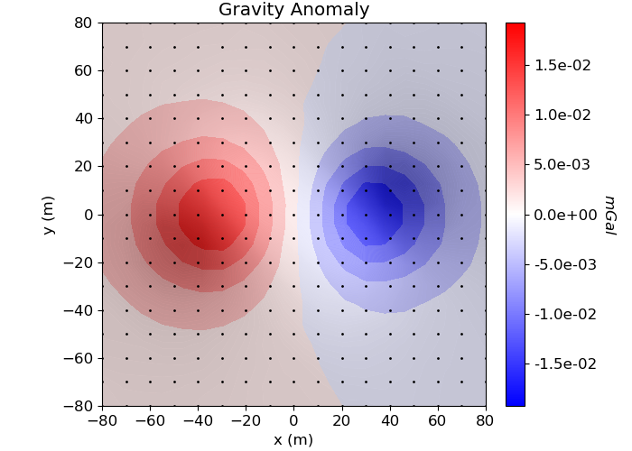
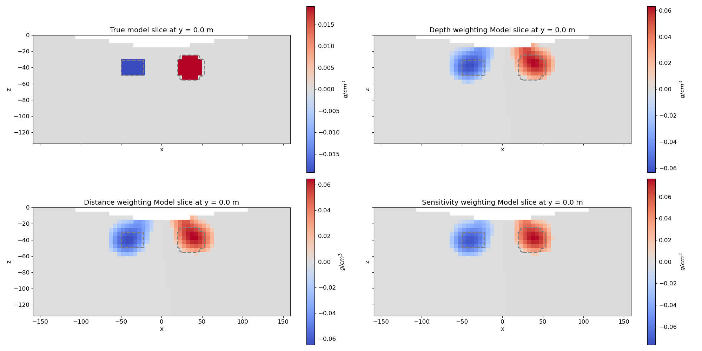
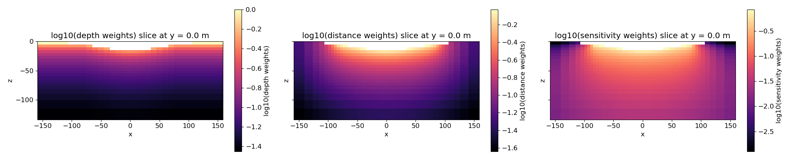

Note
Go to the end to download the full example code.
Compare weighting strategy with Inversion of surface Gravity Anomaly Data#
Here we invert gravity anomaly data to recover a density contrast model. We formulate the inverse problem as an iteratively re-weighted least-squares (IRLS) optimization problem. For this tutorial, we focus on the following:
Setting regularization weights
Defining the survey from xyz formatted data
Generating a mesh based on survey geometry
Including surface topography
Defining the inverse problem (data misfit, regularization, optimization)
Specifying directives for the inversion
Setting sparse and blocky norms
Plotting the recovered model and data misfit
Although we consider gravity anomaly data in this tutorial, the same approach can be used to invert gradiometry and other types of geophysical data.
Import modules#
import os
import tarfile
import matplotlib as mpl
import matplotlib.pyplot as plt
import numpy as np
from discretize import TensorMesh
from discretize.utils import active_from_xyz
from simpeg import (
data,
data_misfit,
directives,
inverse_problem,
inversion,
maps,
optimization,
regularization,
utils,
)
from simpeg.potential_fields import gravity
from simpeg.utils import model_builder, plot2Ddata
# sphinx_gallery_thumbnail_number = 3
Define File Names#
File paths for assets we are loading. To set up the inversion, we require topography and field observations. The true model defined on the whole mesh is loaded to compare with the inversion result. These files are stored as a tar-file on our google cloud bucket: “https://storage.googleapis.com/simpeg/doc-assets/gravity.tar.gz”
# storage bucket where we have the data
data_source = "https://storage.googleapis.com/simpeg/doc-assets/gravity.tar.gz"
# download the data
downloaded_data = utils.download(data_source, overwrite=True)
# unzip the tarfile
tar = tarfile.open(downloaded_data, "r")
tar.extractall()
tar.close()
# path to the directory containing our data
dir_path = downloaded_data.split(".")[0] + os.path.sep
# files to work with
topo_filename = dir_path + "gravity_topo.txt"
data_filename = dir_path + "gravity_data.obs"
overwriting /home/vsts/work/1/s/tutorials/03-gravity/gravity.tar.gz
Downloading https://storage.googleapis.com/simpeg/doc-assets/gravity.tar.gz
saved to: /home/vsts/work/1/s/tutorials/03-gravity/gravity.tar.gz
Download completed!
Load Data and Plot#
Here we load and plot synthetic gravity anomaly data. Topography is generally defined as an (N, 3) array. Gravity data is generally defined with 4 columns: x, y, z and data.
# Load topography
xyz_topo = np.loadtxt(str(topo_filename))
# Load field data
dobs = np.loadtxt(str(data_filename))
# Define receiver locations and observed data
receiver_locations = dobs[:, 0:3]
dobs = dobs[:, -1]
# Plot
mpl.rcParams.update({"font.size": 12})
fig = plt.figure(figsize=(7, 5))
ax1 = fig.add_axes([0.1, 0.1, 0.73, 0.85])
plot2Ddata(
receiver_locations,
dobs,
ax=ax1,
contourOpts={"cmap": "bwr"},
shade=True,
nx=20,
ny=20,
dataloc=True,
)
ax1.set_title("Gravity Anomaly")
ax1.set_xlabel("x (m)")
ax1.set_ylabel("y (m)")
ax2 = fig.add_axes([0.8, 0.1, 0.03, 0.85])
norm = mpl.colors.Normalize(vmin=-np.max(np.abs(dobs)), vmax=np.max(np.abs(dobs)))
cbar = mpl.colorbar.ColorbarBase(
ax2, norm=norm, orientation="vertical", cmap=mpl.cm.bwr, format="%.1e"
)
cbar.set_label("$mGal$", rotation=270, labelpad=15, size=12)
plt.show()

Assign Uncertainties#
Inversion with simpeg requires that we define the standard deviation of our data. This represents our estimate of the noise in our data. For a gravity inversion, a constant floor value is generally applied to all data. For this tutorial, the standard deviation on each datum will be 1% of the maximum observed gravity anomaly value.
maximum_anomaly = np.max(np.abs(dobs))
uncertainties = 0.01 * maximum_anomaly * np.ones(np.shape(dobs))
Defining the Survey#
Here, we define the survey that will be used for this tutorial. Gravity surveys are simple to create. The user only needs an (N, 3) array to define the xyz locations of the observation locations. From this, the user can define the receivers and the source field.
# Define the receivers. The data consists of vertical gravity anomaly measurements.
# The set of receivers must be defined as a list.
receiver_list = gravity.receivers.Point(receiver_locations, components="gz")
receiver_list = [receiver_list]
# Define the source field
source_field = gravity.sources.SourceField(receiver_list=receiver_list)
# Define the survey
survey = gravity.survey.Survey(source_field)
Defining the Data#
Here is where we define the data that is inverted. The data is defined by the survey, the observation values and the standard deviation.
data_object = data.Data(survey, dobs=dobs, standard_deviation=uncertainties)
Defining a Tensor Mesh#
Here, we create the tensor mesh that will be used to invert gravity anomaly data. If desired, we could define an OcTree mesh.
Starting/Reference Model and Mapping on Tensor Mesh#
Here, we create starting and/or reference models for the inversion as well as the mapping from the model space to the active cells. Starting and reference models can be a constant background value or contain a-priori structures.
# Find the indices of the active cells in forward model (ones below surface)
ind_active = active_from_xyz(mesh, xyz_topo)
# Define mapping from model to active cells
nC = int(ind_active.sum())
model_map = maps.IdentityMap(nP=nC) # model consists of a value for each active cell
# Define and plot starting model
starting_model = np.zeros(nC)
Define the Physics and data misfit#
Here, we define the physics of the gravity problem by using the simulation class.
simulation = gravity.simulation.Simulation3DIntegral(
survey=survey, mesh=mesh, rhoMap=model_map, ind_active=ind_active
)
# Define the data misfit. Here the data misfit is the L2 norm of the weighted
# residual between the observed data and the data predicted for a given model.
# Within the data misfit, the residual between predicted and observed data are
# normalized by the data's standard deviation.
dmis = data_misfit.L2DataMisfit(data=data_object, simulation=simulation)
/home/vsts/work/1/s/simpeg/potential_fields/gravity/simulation.py:205: FutureWarning:
'ind_active' has been deprecated and will be removed in SimPEG v0.24.0, please use 'active_cells' instead.
Running the Depth Weighted inversion#
Here we define the directives, weights, regularization, and optimization for a depth-weighted inversion
# inversion directives
# Defining a starting value for the trade-off parameter (beta) between the data
# misfit and the regularization.
starting_beta = directives.BetaEstimate_ByEig(beta0_ratio=1e0)
# Defines the directives for the IRLS regularization. This includes setting
# the cooling schedule for the trade-off parameter.
update_IRLS = directives.Update_IRLS(
f_min_change=1e-4,
max_irls_iterations=30,
coolEpsFact=1.5,
beta_tol=1e-2,
)
# Options for outputting recovered models and predicted data for each beta.
save_iteration = directives.SaveOutputEveryIteration(save_txt=False)
# Updating the preconditionner if it is model dependent.
update_jacobi = directives.UpdatePreconditioner()
# The directives are defined as a list
directives_list = [
update_IRLS,
starting_beta,
save_iteration,
update_jacobi,
]
# Define the regularization (model objective function) with depth weighting.
reg_dpth = regularization.Sparse(mesh, active_cells=ind_active, mapping=model_map)
reg_dpth.norms = [0, 2, 2, 2]
depth_weights = utils.depth_weighting(
mesh, receiver_locations, active_cells=ind_active, exponent=2
)
reg_dpth.set_weights(depth_weights=depth_weights)
# Define how the optimization problem is solved. Here we will use a projected
# Gauss-Newton approach that employs the conjugate gradient solver.
opt = optimization.ProjectedGNCG(
maxIter=100, lower=-1.0, upper=1.0, maxIterLS=20, maxIterCG=10, tolCG=1e-3
)
# Here we define the inverse problem that is to be solved
inv_prob = inverse_problem.BaseInvProblem(dmis, reg_dpth, opt)
# Here we combine the inverse problem and the set of directives
inv = inversion.BaseInversion(inv_prob, directives_list)
# Run inversion
recovered_model_dpth = inv.run(starting_model)
/home/vsts/work/1/s/tutorials/03-gravity/plot_inv_1c_gravity_anomaly_irls_compare_weighting.py:246: DeprecationWarning:
Update_IRLS has been deprecated, please use InversionDirective. It will be removed in version 0.24.0 of SimPEG.
Running inversion with SimPEG v0.24.0
simpeg.InvProblem will set Regularization.reference_model to m0.
simpeg.InvProblem will set Regularization.reference_model to m0.
simpeg.InvProblem will set Regularization.reference_model to m0.
simpeg.InvProblem will set Regularization.reference_model to m0.
simpeg.InvProblem is setting bfgsH0 to the inverse of the eval2Deriv.
***Done using the default solver Pardiso and no solver_opts.***
model has any nan: 0
=============================== Projected GNCG ===============================
# beta phi_d phi_m f |proj(x-g)-x| LS Comment
-----------------------------------------------------------------------------
x0 has any nan: 0
0 9.80e+02 2.66e+05 0.00e+00 2.66e+05 2.19e+02 0
1 4.90e+02 3.20e+03 1.71e+01 1.16e+04 2.11e+02 0
2 2.45e+02 1.21e+03 1.99e+01 6.09e+03 2.04e+02 0 Skip BFGS
3 1.23e+02 4.62e+02 2.20e+01 3.15e+03 1.95e+02 0 Skip BFGS
Reached starting chifact with l2-norm regularization: Start IRLS steps...
irls_threshold 0.05926114907732473
4 6.13e+01 1.84e+02 4.61e+01 3.01e+03 1.76e+02 0 Skip BFGS
5 1.63e+02 8.71e+01 6.49e+01 1.07e+04 2.16e+02 0
6 1.01e+02 5.94e+02 6.47e+01 7.11e+03 2.00e+02 0
7 8.27e+01 3.24e+02 6.65e+01 5.83e+03 2.10e+02 0
8 8.27e+01 2.90e+02 6.01e+01 5.26e+03 2.11e+02 0
9 8.27e+01 2.90e+02 5.22e+01 4.61e+03 2.11e+02 0
10 1.26e+02 2.78e+02 4.44e+01 5.86e+03 2.17e+02 0
11 9.01e+01 4.23e+02 3.76e+01 3.82e+03 2.07e+02 0
12 7.81e+01 2.94e+02 3.28e+01 2.85e+03 2.14e+02 0 Skip BFGS
13 1.25e+02 2.41e+02 2.82e+01 3.76e+03 2.18e+02 0 Skip BFGS
14 9.74e+01 3.57e+02 2.31e+01 2.61e+03 2.15e+02 0
15 9.74e+01 2.87e+02 2.11e+01 2.34e+03 2.17e+02 0 Skip BFGS
16 1.48e+02 2.77e+02 1.89e+01 3.09e+03 2.18e+02 0 Skip BFGS
17 1.15e+02 3.62e+02 1.63e+01 2.23e+03 2.14e+02 0
18 9.86e+01 2.99e+02 1.58e+01 1.85e+03 2.17e+02 0 Skip BFGS
19 1.52e+02 2.65e+02 1.53e+01 2.59e+03 2.19e+02 0 Skip BFGS
20 1.23e+02 3.33e+02 1.38e+01 2.03e+03 2.16e+02 0
21 1.89e+02 2.71e+02 1.34e+01 2.79e+03 2.19e+02 0 Skip BFGS
22 1.56e+02 3.20e+02 1.24e+01 2.25e+03 2.16e+02 0
23 2.38e+02 2.76e+02 1.22e+01 3.19e+03 2.19e+02 0 Skip BFGS
24 1.93e+02 3.31e+02 1.16e+01 2.58e+03 2.17e+02 0
25 2.92e+02 2.82e+02 1.16e+01 3.66e+03 2.19e+02 0 Skip BFGS
26 2.36e+02 3.35e+02 1.11e+01 2.94e+03 2.17e+02 0
27 3.58e+02 2.79e+02 1.10e+01 4.20e+03 2.19e+02 0 Skip BFGS
28 2.89e+02 3.34e+02 1.06e+01 3.39e+03 2.16e+02 0
29 4.37e+02 2.81e+02 1.05e+01 4.89e+03 2.19e+02 0 Skip BFGS
30 3.48e+02 3.44e+02 1.02e+01 3.88e+03 2.16e+02 0
31 5.24e+02 2.85e+02 1.01e+01 5.60e+03 2.19e+02 0 Skip BFGS
32 4.03e+02 3.66e+02 9.78e+00 4.31e+03 2.15e+02 0
33 3.46e+02 2.99e+02 9.84e+00 3.71e+03 2.17e+02 0
Reach maximum number of IRLS cycles: 30
------------------------- STOP! -------------------------
1 : |fc-fOld| = 0.0000e+00 <= tolF*(1+|f0|) = 2.6622e+04
1 : |xc-x_last| = 3.9992e-02 <= tolX*(1+|x0|) = 1.0000e-01
0 : |proj(x-g)-x| = 2.1700e+02 <= tolG = 1.0000e-01
0 : |proj(x-g)-x| = 2.1700e+02 <= 1e3*eps = 1.0000e-02
0 : maxIter = 100 <= iter = 34
------------------------- DONE! -------------------------
Running the Distance Weighted inversion#
Here we define the directives, weights, regularization, and optimization for a distance-weighted inversion
# inversion directives
# Defining a starting value for the trade-off parameter (beta) between the data
# misfit and the regularization.
starting_beta = directives.BetaEstimate_ByEig(beta0_ratio=1e0)
# Defines the directives for the IRLS regularization. This includes setting
# the cooling schedule for the trade-off parameter.
update_IRLS = directives.Update_IRLS(
f_min_change=1e-4,
max_irls_iterations=30,
coolEpsFact=1.5,
beta_tol=1e-2,
)
# Options for outputting recovered models and predicted data for each beta.
save_iteration = directives.SaveOutputEveryIteration(save_txt=False)
# Updating the preconditionner if it is model dependent.
update_jacobi = directives.UpdatePreconditioner()
# The directives are defined as a list
directives_list = [
update_IRLS,
starting_beta,
save_iteration,
update_jacobi,
]
# Define the regularization (model objective function) with distance weighting.
reg_dist = regularization.Sparse(mesh, active_cells=ind_active, mapping=model_map)
reg_dist.norms = [0, 2, 2, 2]
distance_weights = utils.distance_weighting(
mesh, receiver_locations, active_cells=ind_active, exponent=2
)
reg_dist.set_weights(distance_weights=distance_weights)
# Define how the optimization problem is solved. Here we will use a projected
# Gauss-Newton approach that employs the conjugate gradient solver.
opt = optimization.ProjectedGNCG(
maxIter=100, lower=-1.0, upper=1.0, maxIterLS=20, maxIterCG=10, tolCG=1e-3
)
# Here we define the inverse problem that is to be solved
inv_prob = inverse_problem.BaseInvProblem(dmis, reg_dist, opt)
# Here we combine the inverse problem and the set of directives
inv = inversion.BaseInversion(inv_prob, directives_list)
# Run inversion
recovered_model_dist = inv.run(starting_model)
/home/vsts/work/1/s/tutorials/03-gravity/plot_inv_1c_gravity_anomaly_irls_compare_weighting.py:305: DeprecationWarning:
Update_IRLS has been deprecated, please use InversionDirective. It will be removed in version 0.24.0 of SimPEG.
Running inversion with SimPEG v0.24.0
simpeg.InvProblem will set Regularization.reference_model to m0.
simpeg.InvProblem will set Regularization.reference_model to m0.
simpeg.InvProblem will set Regularization.reference_model to m0.
simpeg.InvProblem will set Regularization.reference_model to m0.
simpeg.InvProblem is setting bfgsH0 to the inverse of the eval2Deriv.
***Done using the default solver Pardiso and no solver_opts.***
model has any nan: 0
=============================== Projected GNCG ===============================
# beta phi_d phi_m f |proj(x-g)-x| LS Comment
-----------------------------------------------------------------------------
x0 has any nan: 0
0 2.83e+03 2.66e+05 0.00e+00 2.66e+05 2.19e+02 0
1 1.42e+03 2.33e+04 1.42e+01 4.34e+04 2.17e+02 0
2 7.08e+02 1.04e+04 2.05e+01 2.49e+04 2.15e+02 0 Skip BFGS
3 3.54e+02 4.19e+03 2.65e+01 1.36e+04 2.11e+02 0 Skip BFGS
4 1.77e+02 1.60e+03 3.15e+01 7.19e+03 2.05e+02 0 Skip BFGS
5 8.85e+01 6.08e+02 3.54e+01 3.74e+03 1.99e+02 0 Skip BFGS
Reached starting chifact with l2-norm regularization: Start IRLS steps...
irls_threshold 0.05586414140514328
6 4.43e+01 2.41e+02 7.46e+01 3.54e+03 1.82e+02 0 Skip BFGS
7 1.00e+02 1.14e+02 1.06e+02 1.07e+04 2.14e+02 0
8 6.07e+01 6.30e+02 1.07e+02 7.12e+03 2.16e+02 0
9 4.74e+01 3.57e+02 1.10e+02 5.56e+03 2.09e+02 0
10 4.08e+01 2.97e+02 9.72e+01 4.26e+03 2.12e+02 0
11 6.62e+01 2.32e+02 8.27e+01 5.71e+03 2.15e+02 0
12 5.01e+01 3.79e+02 6.78e+01 3.78e+03 2.10e+02 0
13 7.72e+01 2.67e+02 6.02e+01 4.92e+03 2.17e+02 0 Skip BFGS
14 5.90e+01 3.72e+02 4.94e+01 3.29e+03 2.10e+02 0
15 9.06e+01 2.69e+02 4.30e+01 4.17e+03 2.17e+02 0 Skip BFGS
16 7.03e+01 3.61e+02 3.62e+01 2.90e+03 2.14e+02 0
17 1.06e+02 2.81e+02 3.31e+01 3.80e+03 2.18e+02 0 Skip BFGS
18 8.07e+01 3.77e+02 2.88e+01 2.70e+03 2.14e+02 0
19 6.92e+01 3.00e+02 2.75e+01 2.20e+03 2.17e+02 0 Skip BFGS
20 1.08e+02 2.56e+02 2.62e+01 3.09e+03 2.19e+02 0 Skip BFGS
21 8.79e+01 3.30e+02 2.35e+01 2.40e+03 2.16e+02 0
22 1.34e+02 2.78e+02 2.29e+01 3.34e+03 2.19e+02 0 Skip BFGS
23 1.07e+02 3.40e+02 2.12e+01 2.61e+03 2.16e+02 0
24 1.62e+02 2.78e+02 2.10e+01 3.69e+03 2.19e+02 0 Skip BFGS
25 1.31e+02 3.37e+02 1.99e+01 2.93e+03 2.16e+02 0
26 1.98e+02 2.78e+02 1.97e+01 4.19e+03 2.19e+02 0 Skip BFGS
27 1.61e+02 3.33e+02 1.88e+01 3.35e+03 2.16e+02 0
28 2.45e+02 2.75e+02 1.87e+01 4.85e+03 2.19e+02 0 Skip BFGS
29 1.94e+02 3.47e+02 1.80e+01 3.85e+03 2.16e+02 0
30 2.94e+02 2.82e+02 1.80e+01 5.57e+03 2.19e+02 0 Skip BFGS
31 2.27e+02 3.64e+02 1.74e+01 4.31e+03 2.15e+02 0
32 2.27e+02 2.87e+02 1.74e+01 4.23e+03 2.16e+02 0 Skip BFGS
33 3.47e+02 2.73e+02 1.71e+01 6.22e+03 2.19e+02 0 Skip BFGS
34 2.69e+02 3.60e+02 1.66e+01 4.82e+03 2.15e+02 0
35 2.69e+02 2.86e+02 1.67e+01 4.78e+03 2.16e+02 0
Reach maximum number of IRLS cycles: 30
------------------------- STOP! -------------------------
1 : |fc-fOld| = 0.0000e+00 <= tolF*(1+|f0|) = 2.6622e+04
1 : |xc-x_last| = 2.6712e-02 <= tolX*(1+|x0|) = 1.0000e-01
0 : |proj(x-g)-x| = 2.1622e+02 <= tolG = 1.0000e-01
0 : |proj(x-g)-x| = 2.1622e+02 <= 1e3*eps = 1.0000e-02
0 : maxIter = 100 <= iter = 36
------------------------- DONE! -------------------------
Running the Distance Weighted inversion#
Here we define the directives, weights, regularization, and optimization for a sensitivity weighted inversion
# inversion directives
# Defining a starting value for the trade-off parameter (beta) between the data
# misfit and the regularization.
starting_beta = directives.BetaEstimate_ByEig(beta0_ratio=1e0)
# Defines the directives for the IRLS regularization. This includes setting
# the cooling schedule for the trade-off parameter.
update_IRLS = directives.Update_IRLS(
f_min_change=1e-4,
max_irls_iterations=30,
coolEpsFact=1.5,
beta_tol=1e-2,
)
# Options for outputting recovered models and predicted data for each beta.
save_iteration = directives.SaveOutputEveryIteration(save_txt=False)
# Updating the preconditionner if it is model dependent.
update_jacobi = directives.UpdatePreconditioner()
# Add sensitivity weights
sensitivity_weights = directives.UpdateSensitivityWeights(every_iteration=False)
# The directives are defined as a list
directives_list = [
update_IRLS,
sensitivity_weights,
starting_beta,
save_iteration,
update_jacobi,
]
# Define the regularization (model objective function) for sensitivity weighting.
reg_sensw = regularization.Sparse(mesh, active_cells=ind_active, mapping=model_map)
reg_sensw.norms = [0, 2, 2, 2]
# Define how the optimization problem is solved. Here we will use a projected
# Gauss-Newton approach that employs the conjugate gradient solver.
opt = optimization.ProjectedGNCG(
maxIter=100, lower=-1.0, upper=1.0, maxIterLS=20, maxIterCG=10, tolCG=1e-3
)
# Here we define the inverse problem that is to be solved
inv_prob = inverse_problem.BaseInvProblem(dmis, reg_sensw, opt)
# Here we combine the inverse problem and the set of directives
inv = inversion.BaseInversion(inv_prob, directives_list)
# Run inversion
recovered_model_sensw = inv.run(starting_model)
/home/vsts/work/1/s/tutorials/03-gravity/plot_inv_1c_gravity_anomaly_irls_compare_weighting.py:364: DeprecationWarning:
Update_IRLS has been deprecated, please use InversionDirective. It will be removed in version 0.24.0 of SimPEG.
Running inversion with SimPEG v0.24.0
simpeg.InvProblem will set Regularization.reference_model to m0.
simpeg.InvProblem will set Regularization.reference_model to m0.
simpeg.InvProblem will set Regularization.reference_model to m0.
simpeg.InvProblem will set Regularization.reference_model to m0.
simpeg.InvProblem is setting bfgsH0 to the inverse of the eval2Deriv.
***Done using the default solver Pardiso and no solver_opts.***
model has any nan: 0
=============================== Projected GNCG ===============================
# beta phi_d phi_m f |proj(x-g)-x| LS Comment
-----------------------------------------------------------------------------
x0 has any nan: 0
0 3.13e+03 2.66e+05 0.00e+00 2.66e+05 2.19e+02 0
1 1.56e+03 1.83e+04 1.16e+01 3.65e+04 2.16e+02 0
2 7.82e+02 7.96e+03 1.62e+01 2.06e+04 2.13e+02 0 Skip BFGS
3 3.91e+02 3.16e+03 2.04e+01 1.12e+04 2.09e+02 0 Skip BFGS
4 1.96e+02 1.20e+03 2.39e+01 5.86e+03 1.99e+02 0 Skip BFGS
5 9.78e+01 4.57e+02 2.64e+01 3.04e+03 1.91e+02 0 Skip BFGS
Reached starting chifact with l2-norm regularization: Start IRLS steps...
irls_threshold 0.05497622541918955
6 4.89e+01 1.84e+02 5.45e+01 2.85e+03 2.03e+02 0 Skip BFGS
7 1.21e+02 9.77e+01 7.46e+01 9.14e+03 2.15e+02 0
8 8.12e+01 4.89e+02 7.44e+01 6.53e+03 1.99e+02 0
9 6.99e+01 2.98e+02 7.59e+01 5.60e+03 2.16e+02 0
10 6.00e+01 2.99e+02 6.82e+01 4.39e+03 2.06e+02 0
11 9.71e+01 2.33e+02 5.92e+01 5.98e+03 2.15e+02 0
12 7.43e+01 3.70e+02 5.00e+01 4.09e+03 2.14e+02 0
13 1.16e+02 2.57e+02 4.33e+01 5.28e+03 2.17e+02 0 Skip BFGS
14 9.07e+01 3.55e+02 3.58e+01 3.60e+03 2.12e+02 0
15 1.42e+02 2.57e+02 3.18e+01 4.77e+03 2.18e+02 0 Skip BFGS
16 1.13e+02 3.44e+02 2.73e+01 3.42e+03 2.13e+02 0
17 1.72e+02 2.75e+02 2.53e+01 4.62e+03 2.18e+02 0 Skip BFGS
18 1.29e+02 3.82e+02 2.25e+01 3.29e+03 2.12e+02 0
19 1.12e+02 2.97e+02 2.16e+01 2.71e+03 2.16e+02 0 Skip BFGS
20 1.73e+02 2.60e+02 2.09e+01 3.89e+03 2.18e+02 0 Skip BFGS
21 1.36e+02 3.53e+02 1.93e+01 2.97e+03 2.15e+02 0
22 2.06e+02 2.80e+02 1.88e+01 4.16e+03 2.18e+02 0 Skip BFGS
23 1.61e+02 3.54e+02 1.77e+01 3.21e+03 2.15e+02 0
24 2.46e+02 2.77e+02 1.74e+01 4.56e+03 2.19e+02 0 Skip BFGS
25 1.93e+02 3.53e+02 1.66e+01 3.55e+03 2.15e+02 0
26 2.94e+02 2.76e+02 1.64e+01 5.10e+03 2.18e+02 0 Skip BFGS
27 2.29e+02 3.58e+02 1.58e+01 3.97e+03 2.15e+02 0
28 3.45e+02 2.84e+02 1.58e+01 5.74e+03 2.19e+02 0
29 2.64e+02 3.71e+02 1.52e+01 4.37e+03 2.15e+02 0
30 3.98e+02 2.83e+02 1.52e+01 6.32e+03 2.18e+02 0 Skip BFGS
31 3.00e+02 3.82e+02 1.46e+01 4.77e+03 2.14e+02 0
32 3.00e+02 2.90e+02 1.47e+01 4.69e+03 2.15e+02 0
33 4.53e+02 2.83e+02 1.46e+01 6.88e+03 2.18e+02 0 Skip BFGS
34 3.34e+02 3.99e+02 1.41e+01 5.12e+03 2.13e+02 0
35 2.89e+02 2.94e+02 1.42e+01 4.41e+03 2.16e+02 0
Reach maximum number of IRLS cycles: 30
------------------------- STOP! -------------------------
1 : |fc-fOld| = 0.0000e+00 <= tolF*(1+|f0|) = 2.6622e+04
1 : |xc-x_last| = 4.1845e-02 <= tolX*(1+|x0|) = 1.0000e-01
0 : |proj(x-g)-x| = 2.1642e+02 <= tolG = 1.0000e-01
0 : |proj(x-g)-x| = 2.1642e+02 <= 1e3*eps = 1.0000e-02
0 : maxIter = 100 <= iter = 36
------------------------- DONE! -------------------------
Recreate True Model#
# Define density contrast values for each unit in g/cc
background_density = 0.0
block_density = -0.2
sphere_density = 0.2
# Define model. Models in simpeg are vector arrays.
true_model = background_density * np.ones(nC)
# You could find the indicies of specific cells within the model and change their
# value to add structures.
ind_block = (
(mesh.gridCC[ind_active, 0] > -50.0)
& (mesh.gridCC[ind_active, 0] < -20.0)
& (mesh.gridCC[ind_active, 1] > -15.0)
& (mesh.gridCC[ind_active, 1] < 15.0)
& (mesh.gridCC[ind_active, 2] > -50.0)
& (mesh.gridCC[ind_active, 2] < -30.0)
)
true_model[ind_block] = block_density
# You can also use simpeg utilities to add structures to the model more concisely
ind_sphere = model_builder.get_indices_sphere(
np.r_[35.0, 0.0, -40.0], 15.0, mesh.gridCC
)
ind_sphere = ind_sphere[ind_active]
true_model[ind_sphere] = sphere_density
Plotting True Model and Recovered Models#
# Plot Models
fig, ax = plt.subplots(2, 2, figsize=(20, 10), sharex=True, sharey=True)
ax = ax.flatten()
plotting_map = maps.InjectActiveCells(mesh, ind_active, np.nan)
cmap = "coolwarm"
slice_y_loc = 0.0
mm = mesh.plot_slice(
plotting_map * true_model,
normal="Y",
ax=ax[0],
grid=False,
slice_loc=slice_y_loc,
pcolor_opts={"cmap": cmap, "norm": norm},
)
ax[0].set_title(f"True model slice at y = {slice_y_loc} m")
plt.colorbar(mm[0], label="$g/cm^3$", ax=ax[0])
# plot depth weighting result
vmax = np.abs(recovered_model_dpth).max()
norm = mpl.colors.TwoSlopeNorm(vcenter=0, vmin=-vmax, vmax=vmax)
mm = mesh.plot_slice(
plotting_map * recovered_model_dpth,
normal="Y",
ax=ax[1],
grid=False,
slice_loc=slice_y_loc,
pcolor_opts={"cmap": cmap, "norm": norm},
)
ax[1].set_title(f"Depth weighting Model slice at y = {slice_y_loc} m")
plt.colorbar(mm[0], label="$g/cm^3$", ax=ax[1])
# plot distance weighting result
vmax = np.abs(recovered_model_dist).max()
norm = mpl.colors.TwoSlopeNorm(vcenter=0, vmin=-vmax, vmax=vmax)
mm = mesh.plot_slice(
plotting_map * recovered_model_dist,
normal="Y",
ax=ax[2],
grid=False,
slice_loc=slice_y_loc,
pcolor_opts={"cmap": cmap, "norm": norm},
)
ax[2].set_title(f"Distance weighting Model slice at y = {slice_y_loc} m")
plt.colorbar(mm[0], label="$g/cm^3$", ax=ax[2])
# plot sensitivity weighting result
vmax = np.abs(recovered_model_sensw).max()
norm = mpl.colors.TwoSlopeNorm(vcenter=0, vmin=-vmax, vmax=vmax)
mm = mesh.plot_slice(
plotting_map * recovered_model_sensw,
normal="Y",
ax=ax[3],
grid=False,
slice_loc=slice_y_loc,
pcolor_opts={"cmap": cmap, "norm": norm},
)
ax[3].set_title(f"Sensitivity weighting Model slice at y = {slice_y_loc} m")
plt.colorbar(mm[0], label="$g/cm^3$", ax=ax[3])
# shared plotting
plotting_map = maps.InjectActiveCells(mesh, ind_active, 0.0)
slice_y_ind = (
mesh.cell_centers[:, 1] == np.abs(mesh.cell_centers[:, 1] - slice_y_loc).min()
)
for axx in ax:
utils.plot2Ddata(
mesh.cell_centers[slice_y_ind][:, [0, 2]],
(plotting_map * true_model)[slice_y_ind],
contourOpts={"alpha": 0},
level=True,
ncontour=2,
levelOpts={"colors": "grey", "linewidths": 2, "linestyles": "--"},
method="nearest",
ax=axx,
)
axx.set_aspect(1)
plt.tight_layout()

Visualize weights#
Plot Weights
fig, ax = plt.subplots(1, 3, figsize=(20, 4), sharex=True, sharey=True)
plotting_map = maps.InjectActiveCells(mesh, ind_active, np.nan)
cmap = "magma"
slice_y_loc = 0.0
# plot depth weights
mm = mesh.plot_slice(
plotting_map * np.log10(depth_weights),
normal="Y",
ax=ax[0],
grid=False,
slice_loc=slice_y_loc,
pcolor_opts={"cmap": cmap},
)
ax[0].set_title(f"log10(depth weights) slice at y = {slice_y_loc} m")
plt.colorbar(mm[0], label="log10(depth weights)", ax=ax[0])
# plot distance weights
mm = mesh.plot_slice(
plotting_map * np.log10(distance_weights),
normal="Y",
ax=ax[1],
grid=False,
slice_loc=slice_y_loc,
pcolor_opts={"cmap": cmap},
)
ax[1].set_title(f"log10(distance weights) slice at y = {slice_y_loc} m")
plt.colorbar(mm[0], label="log10(distance weights)", ax=ax[1])
# plot sensitivity weights
mm = mesh.plot_slice(
plotting_map * np.log10(reg_sensw.objfcts[0].get_weights(key="sensitivity")),
normal="Y",
ax=ax[2],
grid=False,
slice_loc=slice_y_loc,
pcolor_opts={"cmap": cmap},
)
ax[2].set_title(f"log10(sensitivity weights) slice at y = {slice_y_loc} m")
plt.colorbar(mm[0], label="log10(sensitivity weights)", ax=ax[2])
# shared plotting
for axx in ax:
axx.set_aspect(1)
plt.tight_layout()

Total running time of the script: (2 minutes 15.392 seconds)
Estimated memory usage: 289 MB